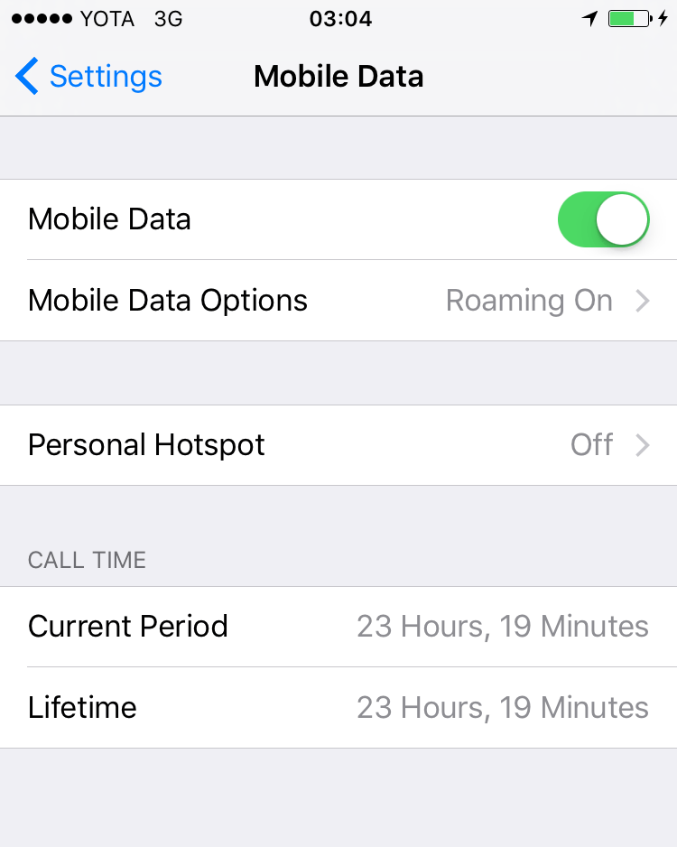
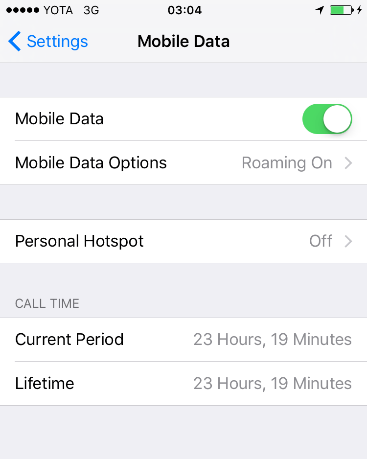

WSD2016 + PiterCSS Meetup #6
Как это было
пару слов о том, что у меня в «голове»…
Twitter, GitHub, почта, VKontakte, Facebook и т. д.: @realetive

- Геолоакация
- Geolocation (браузер возвращает координаты и время)
Поддержка очень хорошая
- Отслеживание расположения в пространстве
DeviceMotion
- навешиваемя на события, события отдает координаты расположения
- в ивенте приходят координаты
Поддержка хуже, в современных браузерах ок. -
Можно добраться через AccelerometrSensor и т.п
- захват картинки
- Стандарт Media capture и streams
2 метода
- список устройств (промис) - тип устройства, id, описание
- запрос получения видео и аудио
C поддержкой плохо на мобильных, работает только по https
Есть готовые решения A-Frame
-----
Получаем карты, в них передаем положение и все показывается
-----
Shower ['ʃəuə] noun. A person or thing that shows.
- чувак из aviasales
По факту набор фич + методолгия
--
Отличия от мобильных технологи(swift)
---
Начало
- manifest.js ( имя + иконки + стартовый урл + display)
- вкладка applications (можно смотреть манифест)
- service-worker
-- utils - sw-toolbox, gulp-service-worker
---
- 800 писем в год
- Таблицы не всегда.
Блоки h1 и h2 и p-kи - ок
Подходы
- олд-скул (без цсс)
- традиция (таблица в таблицу)
- нью-скул ()
- spongy (mobile first) - ссылка на фрейворк?
- medium - все на дивах (похер на всех)
-
Типы
- маркетинговый булшит
- дайджест(колонка)
- транзакция
- цепочка и триггеры
- e-comerce
Симантика
- важно самому понимать что происходит
-
- npm
- система сборка
- минификация
- препроцессоры
- инлайн
- шаблонизация
-
-
- Обещали 93 в итоге 30%
- Только по https
- Что влияет на скорость загрузки
- ширина канала
- сетевые задержки (можно уменьшить колличество соеденений)
TL;DR
-
Рассказ про деревянную методологию. Вероятно, автор
очередной CSS-методологии почти проникся БЭМом,
но на каком-то этапе обжегся.
-
Демонстрация инструмента визуальной верстки. Как и ожидалось,
демонстрирующий погрузился в волну критики и легких насмешек.
-
Доклад про кнопки и ссылки в HTML. Вадим Макеев рассказал
обо всех тонкостях работы с данными элементами. В докладе было
рассказано про кнопки и ссылки, а также их разновидности, и про
распространенныe ошибки при их верстке.
pitercss conference
Конференция состоится в июне 2017 года. Она будет иметь формат
большого европейского IT-события. Пока можно подписаться на
обновления тут.
Деревянная методология
Андрей Волынкин. Студия М18
Основные пункты методологии
- Привязка к семантике HTML
- Жесткая привязка к структуре DOM-дерева
- Активное использование дочернего селектора
<html>
<body>
<main>
<header>
<h1>Дратути!</h1>
</header>
<section>
<p>Здесь могла быть ваша реклама</p>
</section>
...
_globals/
constants.pcss
html/
body/
main/
header/
_headings/
h1.pcss
!h2.pcss
&.pcss
_globals/
constants.pcss
html/
body/
main/
header/
_headings/
h1.pcss
!h2.pcss
&.pcss
_globals/
constants.pcss
html/
body/
main/
header/
_headings/
h1.pcss
!h2.pcss
&.pcss
_globals/
constants.pcss
html/
body/
main/
header/
_headings/
h1.pcss
!h2.pcss
&.pcss
html > body > main > header > h1 { }
html > body > main > header h2 { }
html > body > main > header { }
Pros & Cons
- На первый взгляд легкая для чтения структура
- Сложное переиспользование стилей
- Слишком вложенная структура
Webflow. Ноухау или конструктор?
Александр Меньчик. 1nsight.
- Это
<button>
- Если нет, то
<a href="…">
- Всё.
 

Fork me on GitHub